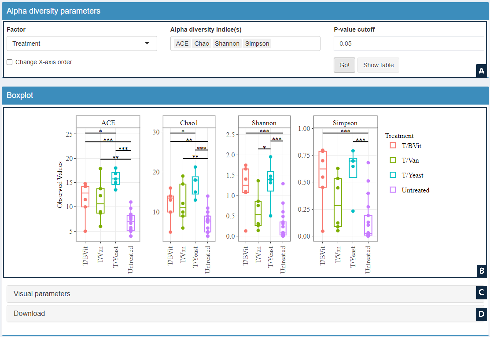
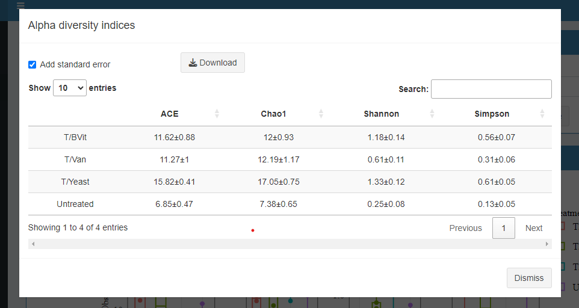

This section aims to estimate and visualize Alpha diversity (diversity among samples) based on selected indices. Diversity measures between groups are calculated using Pair-wise ANOVA.
- Chao1 and ACE: Mesures the species richness (total number of species in a sample) that is sensitive to rare OTUs (singletons and doubletons). Higher values indicate higher diversity. Chao1 is preferred when the expected observed richness is high, whereas ACE performs better in the case where the expected observed richness is low 1.
- Simpson: Measures the probability that two individuals randomly selected from a sample will belong to the same species/OTUs (Ranges between 0 and 1. 1: represents infinite diversity and 0: represents no diversity)
- Shannon: Measures how evenly the microbes are distributed in a sample
- Evenness: Measure of the relative abundance of different species/OTUs making up the richness of a sample
- PD: Quantifies the total branch lengths between the observed species on a rooted phy-logenetic tree. This method required the uploading of phylogenetic tree.
User Interface

- A: Dynamic Input
- B: Output: Result Boxplot
- C: Customize Boxplot: Labels size and x.axis angle
- D: Download Current Boxplot in PDF or PNG format
Options
- Factor: Select factor from the categorial variables in metadata file
- Change X-axis order: Change the element's order of the selected factor
- Indices: Choose one or more alpha diversity indices
- p-value cutoff: p-value threshold for significance in ANOVA test
Output
- Boxplot: Boxplots of selected Alpha diversity indices. Significance groups are presented in the boxplot based on p-value threshold selected.
- Alpha diversity indices: Table of selectes indices (with standard error) for each group of samples (Image below). The table is accessible from show table button.

References
1 Basualdo, Carola V. "Choosing the best non-parametric richness estimator for benthic macroinvertebrates databases." Revista de la Sociedad Entomológica Argentina 70.1-2 (2011): 27-38.